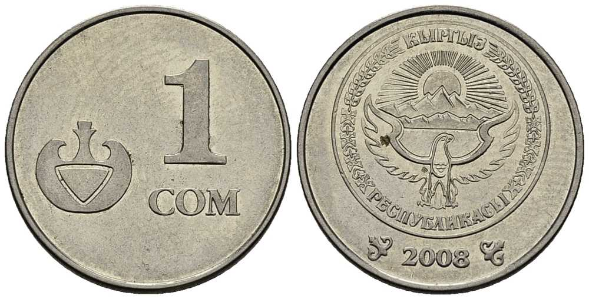

Кыргызстан
Кыргызста́н или Кирги́зия официально — Кыргы́зская Респу́блика (кирг. Кыргыз Республикасы, аббревиатура — КР),—государство в Центральной Азии, расположенное в западной и центральной части горной системы Тянь-Шань и на Памиро-Алае. Страна граничит с Китаем на востоке и юго-востоке, Казахстаном — на севере, Узбекистаном — на западе, и Таджикистаном — на юге.
Население составляет 7 037 590 чел. (2023 г.).
Климат
Климат Кыргызстана — резко-континентальный с засушливым характером.
Температура воздуха зависит от региона, но общая черта всех областей.
Кыргызстан — это сухой воздух во всех частях страны. Кызгызстан — очень солнечная страна. Число солнечных дней в году достигает 250. Всего на территории Киргизии выделяют 4 типа климата:
долинно-предгорный среднегорный
высокогорный
вечные снега.
Кыргызстан является президентской, светской, унитарной республикой.
Денежная единица Кыргызстана
Денежная единица Кыргызстана
Сом (KGS) — денежная единица Кыргызской Республики. Один сом равен ста тыйынам.
Буквенный код ISO 4217 — KGS, цифровой — 417, официальный символ — с.
Кыргызстан был одной из первых стран бывшего СССР (и первой в постсоветской Центральной Азии), утвердившей собственную национальную валюту. Постановление о её введении было принято Верховным Советом Кыргызстана 3 мая 1993 года.

Население
Общая численность населения Кыргызстана по данным на 1 января 2023 года составляет 7 млн 37 тысяч человек. Кыргызстан занимает 96-е место в списке стран по численности населения. Средняя плотность населения составляет чуть более 35.2 жителей на км².
По данным на начало 2023 года, этнос киргизы составляет большинство населения (77,7 %). Другие этносы, проживающие в стране:
узбеки (14,1 %) русские (3,9 %)
дунгане (1 %) уйгуры (0,90 %) таджики (0,89 %).
Флора и Фауна
Флора Киргизии разнообразна (4 тыс. видов растений) и отличается выраженной высотной поясностью:
предгорья покрыты полупустынями и сухими степями с фрагментами фисташковых редколесий;
выше 1200 м над уровнем моря начинается лесной пояс. Леса образованы тянь-шаньской елью, пихтой, можжевельником;
высокогорья (выше 3000–3500 м) покрыты альпийскими лугами.
Животный мир, охраняемый в Иссык-Кульском и Сары-Челекском заповедниках, национальном парке Ала-Арча, представлен в горных лесах медведем, рысью, волком, кабаном, куницей, снежными барсами, горными козлами и баранами, многочисленными мелкими млекопитающими и птицами. В безлесных предгорьях обитают преимущественно грызуны, птицы, пресмыкающиеся.
Этимология
Киргизы (кыргызы) — коренной народ Центральной Азии, в основном проживающий в республике Киргизия. В России живут на территории Красноярского края, Новосибирской, Свердловской, Иркутской и некоторых других областей. Говорят на киргизском языке, который относится к кыпчакской группе тюркских языков.
Предками современных киргизов считают енисейских кыргызов, один из древнейших кочевых скотоводческих народов, обитавших на территории Южной Сибири. В 6 веке племена енисейских кыргызов образовали Кыргызский каганат, который позднее распространил свою власть на всю территорию исторической Монголии. Енисейские кыргызы были последним тюркским народом, которые властвовали в монгольских степях пока их не вытеснили в Алтай монголоязычные кидани. В 13-14 веках бо́льшая часть алтайских кыргызов переселилась на Тянь-Шань, где они приняли ислам и начали процесс сплочения местных кочевых тюркских (кипчаки, карлуки, и т. д.) и монгольских (кара-китаи, найманы и т. д.) племён в единый народ. Енисейские кыргызы, оставшиеся на прежних территориях, сыграли значительную роль в формировании хакасского народа. Алтайские кыргызы участвовали в формировании алтайцев и современных монголов.
Киргизы рассматриваются как смешанная из разных исторических племен популяция. Смешение происходило в процессе завоеваний, смешанных браков, ассимиляции и миграции.
История Кыргызстана С древности до наших дней
История Кыргызстана охватывает периоды от древних петроглифов до Великого Шелкового пути, от Советского Союза до принятия страной независимости. Кыргызстан издавна являлся исторически важным пунктом в центре Азии, поскольку находился на слиянии торговых путей и империй. Расположенная прямо между китайской, персидской, арабской, индийской, тюркской и российской империями, земля, которая сегодня формирует Кыргызстан, изменила историю многих народов, религий, культур и путешественников.
Центральная Азия и районы вокруг Тянь-Шаня были населены на протяжении тысяч лет, об этом свидетельствуют петроглифы и многочисленные археологические находки. Город Ош на юге Кыргызстана является одним из старейших поселений в Центральной Азии и был известен с древних времен. Некоторые из ранних поселенцев были кочевыми язычниками, которые практиковали тенгризм, древняя монотеистическая религия была сосредоточена вокруг природы. До битвы при Таласе, между китайской династией Тан и халифатом арабского Аббасида в 751 году н.э., Центральная Азия была в основном буддийской территорией, хотя, конечно, здесь присутствовали другие религии и культуры, приходящие вместе с путешественниками и торговцами Великого Шелкового пути. Битва в Таласе стала поворотным моментом, после которого ислам превратился в доминирующую религию и начал оказывать огромное влияние на регион в целом. Караханиды были одной из ранних мусульманских династий, и они привнесли в ислам множество древних тюркских элементов. Караханиды находились у власти с 9 по 11 века, в этот период они возвели башню Бурана и мавзолеи в Узгене.
Начиная с 13 века, когда Азия подверглась монгольскому завоеванию, люди, которые стали предками сегодняшних этнических киргизов, перебрались с территории сибирской реки Енинсей в Тянь-Шань. Тянь-Шань оставался под контролем монголов в течение нескольких сотен лет, здесь правили в том числе калмыки, ойраты и джунгары.
В 18 веке династия Цин в Китае достигла наибольших размеров, а Ойраты стали вассальным государством. С возникновением Кокандского ханства в начале 1700-х годов Кыргызстан попал под власть его правителей. История Кыргызстана фиксирует, что на протяжении этого времени область являлась важным пунктом для путешественников на Шелковом пути, пересекающих Азию. Сегодня туристы своими глазами могут увидеть Таш Рабат - каменный караван-сарай 15 века в Нарыне. Языки и культуры многих стран, благодаря путешествующим через территории нынешнего Кыргызстана купцам и странникам, оказали знаковое влияние на людей, живущих в этом районе.
Центральная Азия была важнейшим трофеем Великой игры имперской экспансии в 1800-х годах, разыгранной между Россией на севере и Великобританией на юге. В это время влияние Кокандского ханства ослабело, благодаря чему мелкие правители в регионах получили значительно больше власти. Когда правитель Алая (южный Кыргызстан) Алимбек Датка был убит во время дворцового переворота, его жена, Курманджан, в 1862 году стала новым лидером территории. В 1867 году Алайский регион был аннексирован Российской империей, Курманджан способствовала мирному разрешению этого вопроса. В фильме 2014 года рассказывается о жизни Курманджан, которая сейчас считается важной частью истории Кыргызстана.
С 1867 по 1918 год Кыргызстан был частью Российской империи в составе Туркестанского генерал-губернаторства. Туркестан долгое время оставался колониальным форпостом, довольно изолированным от столицы в Санкт-Петербурге, однако появление железных дорог на рубеже 20-го века способствовало появлению большого количества русских поселенцев, которые занимали и использовали и без того ограниченные земельные и водные ресурсы. Это привело к восстанию Басмачей в 1916 году, а затем к резким репрессиям. Многие узбеки, казахи и киргизы после восстания 1916 года, а так же насильственного прибытия Коммунистической партии в 1918 году, бежали через границу в Китай.
После создания Советского Союза в 1917 году Туркестан был разделен на области по этническому признаку. Поскольку одни были кочевниками, а другие отождествляли себя с религией, городом или профессией, а не с этнической принадлежностью, было проблематично установить границы, и многие народы оказались вне их титульной нации (именно поэтому на юге Кыргызстана сегодня проживает так много узбеков). В1924 году была создана Кара-Киргизская автономная область, а в 1926 году ее заменила Киргизская автономная социалистическая советская республика. Оба эти органа были частью Российской социалистической федеративной советской республики. В 1936 году была создана Киргизская Советская Социалистическая Республика, управляемая киргизским отделением Коммунистической партии из столицы во Фрунзе, ныне Бишкеке. Одной из самых заметных фигур из Советского Кыргызстана был Чингиз Айтматов, известный политик, дипломат и писатель.
31 августа 1991 года Республика Кыргызстан провозгласила независимость от Советского Союза. Президент с 1990 года Аскар Акаев стал президентом новой республики и оставался в должности до революции в Тюльпане в 2005 году. Политика оставалась нестабильной, пока протесты в 2010 году не привели к свержению Бакиева, который заменил Акаева. Напряженность вспыхнула в результате насилия по этническому признаку между кыргызами и узбеками в Оше, напоминая о подобных беспорядках, вспыхнувших в Оше в 1990 году. Роза Отунбаева стала временным президентом в апреле 2010 года, а также одной из немногих женщин-лидеров в стране с мусульманским большинством. Она также стала первым киргизским лидером, который мирно передал власть, после выборов в 2011 году, приведших к президентству Алмазбека Атамбаева. С тех пор в 2014 и 2016 годах Кыргызстан оставался относительно стабильным, и даже принимал два фестиваля «Всемирные игры кочевников».